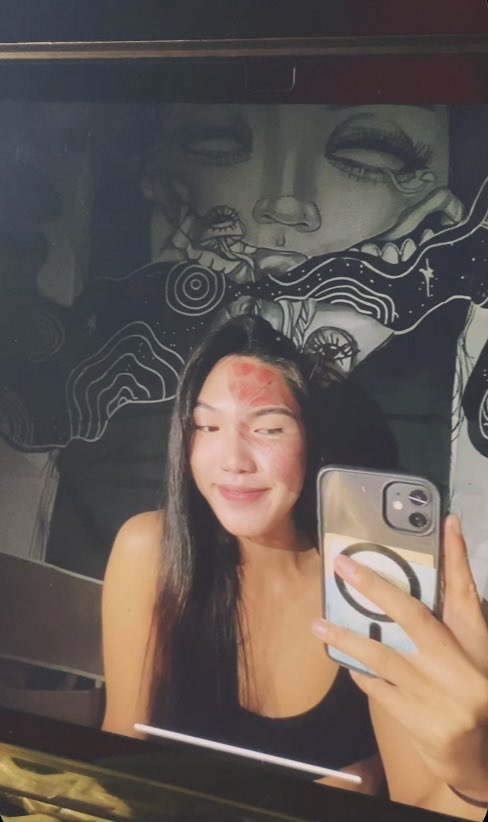

Welcome to my Personal Website
Hello! I am Jhonmark Toloza, i am a grade 10 student from 10 Quartz, i like to dance and to play Volley ball. My dream is to become a surgeon, and help poor people or people who cannot payfor their hospital bills or expenses, and i want to be financially stable before having a family or finding someone for life because its hard to settle when u dont have a money for your family, your family will die on hunger and have an difficult life